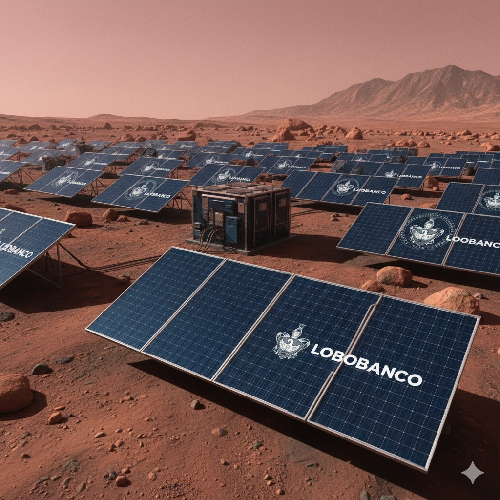

Innovación Absurda
Energía Eólica Universitaria
Aprovechamos las fuertes corrientes de aire que se generan cuando los estudiantes suspiran al ver que reprobaron. También tenemos turbinas ocultas en los pasillos de CU que giran con la velocidad de los que llegan tarde a su clase de las 7 AM.
Energía Solar... desde Marte
¿Por qué poner paneles en Puebla si en Marte no hay nubes? Nuestra granja solar en el Planeta Rojo envía la energía a los cajeros vía Bluetooth 5.0 Interplanetario. Cero emisiones, 100% lag en tus transacciones.

LoboCard Edición "Furry"
Sabemos que existe una comunidad... "especial" en la universidad. Para ellos, creamos esta pieza maestra de plástico sin valor financiero.
- No tiene chip inteligente.
- Carece de banda magnética funcional.
- Será rechazada en cualquier OXXO.
- Tiene un lobito estético que combina perfecto con tu fursuit.